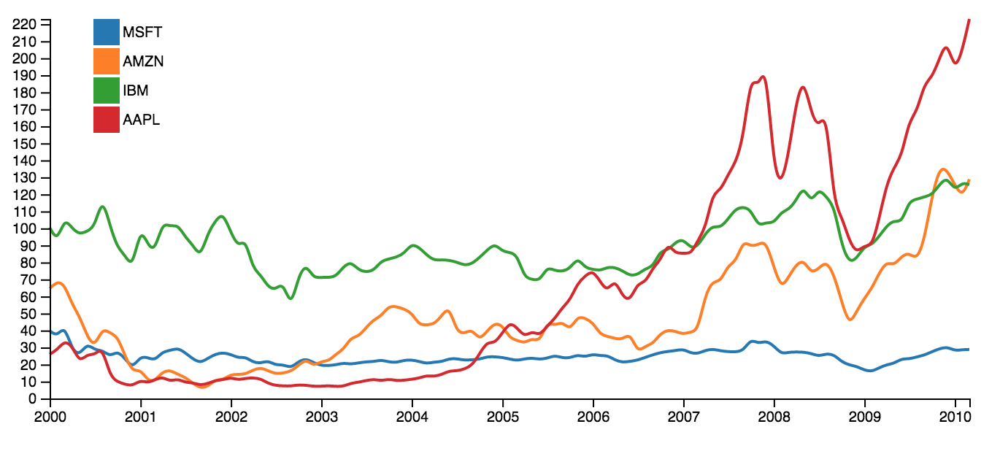

Objectifs du TP # 2
- Approfondir vos connaissances en D3.js
- Faire un premier line chart avec données de stock market
0. Block builder
1. Multiple line chart
- #1: commencer avec un line chart simple
- #2: utiliser les données de stock market
- #3 : charles ces données en utilisant d3.keys
- #4 : affichage des axes, couleurs et légendes (voir cours)
- #5 : résultat final

2. Ressources utiles
- d3-dsv - parse tab-separated values
- d3-time-format - date parsing and formatting
- d3-scale - position encodings
- d3-array - data processing
- d3-axis - axes
3. Rendu
- Reproduire le graphique ci-dessous à partir du code vu précedemment
- Première étape: créer un area chart
- Deuxième étape: créer des small multiples
- Troisième étape: créer un stacked chart
- Quatrième étape: créer un stream graph
- Cinquième étape : transition animée entre les trois graphiques à la D3 show reel
- Bonus: reproduire la show reel complete !
- Envoyez le lien vers votre block et votre solution ici.